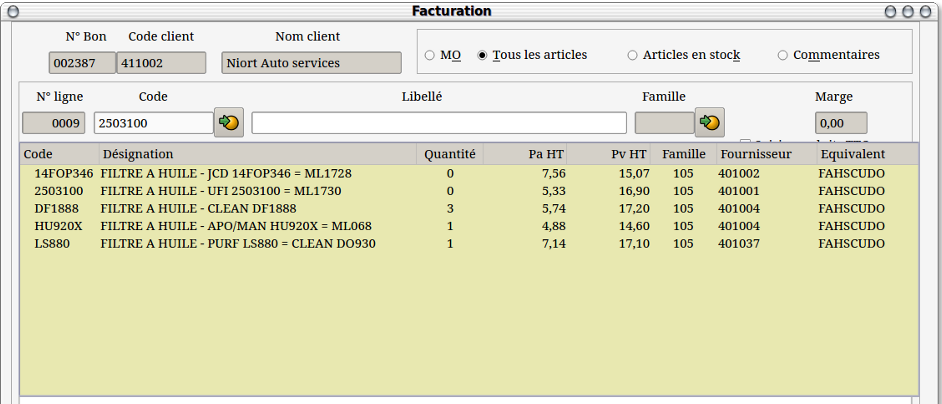

~ Comptabilité et Facturation Laurux ~

~ Comptabilité et Facturation Laurux ~ |
|
|
|
Les
codes équivalents peuvent être utilisés de deux façons différentes. Voir la documentation sur les articles.
1- Comme un autre code d'appel d'un
produit.
Exemple
d'utilisation : Vis à tête fraisée 3*6 codifiée 2430035897. On
peux mettre VTF3X6 en code équivalent et utiliser ensuite ce code en
facturation ou en caisse ce qui est plus simple que de taper
2430035897. Le code équivalent est dans ce cas un code mnémotechnique.
2- Comme un code d'appel commun à plusieurs
produits.
Exemple
d'utilisation : Filtre à huile. Ce produit est proposé sous des
références différentes par plusieurs constructeurs (X4005E, SP-943,
F118/606, FT5656 etc...) donc pour un modèle de véhicule défini (Fiat
Scudo) on va avoir plusieurs filtres à huile similaires ayant chacun
leur propre code produit. On pourra dans ce cas mettre un code
équivalent commun à tous les filtres à huile (exemple FAHSCUDO).
En facturation, la saisie du code
FAHSCUDO ouvrira une fenêtre de sélection proposant l'ensemble des
filtres à huile ayant ce code équivalent. A l'inverse, la saisie d'un
code produit ayant un code équivalent commun à d'autres produits
ouvrira la même fenêtre de sélection.
NB :
Le nombre de code équivalents attribués à un produit n'est pas limité.
L'attribution des codes équivalents effectue une
mise à jour circulaire. Cela signifie que si un code équivalent est
attribué à un article qui contient lui-même d'autre codes équivalents
alors l'ensemble des codes sera mis à jour.
NB : Pour supprimer un code équivalent, on le sélectionne et on fait "Suppr". Notez que cette suppression s'effectuera d'une manière circulaire pour tous les produits.

Comment cela fonctionne-t-il dans le détail ?
1- Si le code saisi est un code produit qui n'est pas présent dans la
table des codes équivalents alors le produit est affiché.
2- Si le code saisi est un code produit qui est présent dans la table
des codes équivalents et que le code équivalent n'est pas un autre
code produit (code mnémotechnique) alors le produit s'affiche.
3- Si le code
saisi est un code équivalent qui est présent une seule fois dans
la table des codes équivalents alors le produit s'affiche.
4- Si le code
saisi est un code équivalent qui est présent plusieurs fois dans
la table des codes équivalents alors alors la fenêtre de recherche s'ouvre.
5- Si le code
saisi est un code produit qui est présent plusieurs fois dans la
table des codes équivalents alors la fenêtre de recherche s'ouvre.
----------------------------------------------------------------------------------------------------------------------